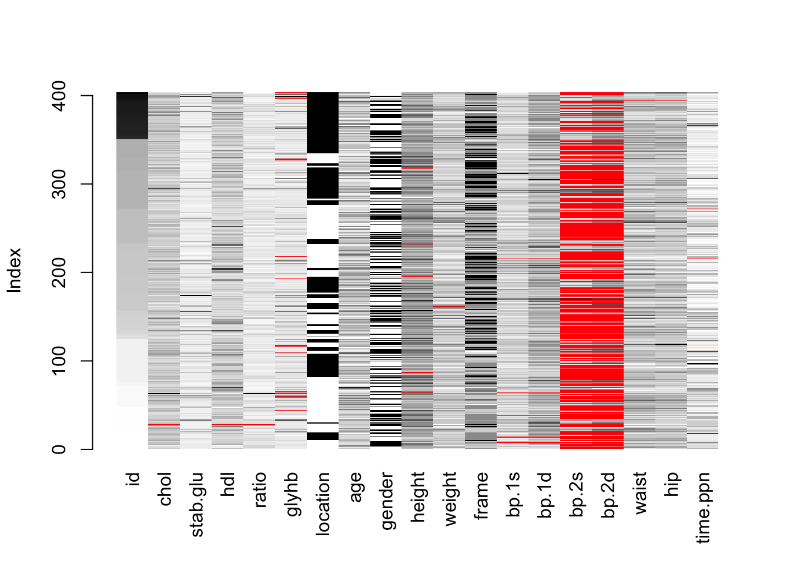

4 R objektid
R-i töökeskkonnas “workspace” asuvad objektid, millega me töötame. Tüüpilised objektid on:
- Vektorid, maatriksid, listid ja tabelid.
- Statistiliste analüüside väljundid (S3, S4 klass).
- Funktsioonid, mille oleme ise sisse lugenud.
Käsk ls() annab objektide nimed teie workspace-s:
ls()## [1] "a" "a1" "a2" "a3" "answer"
## [6] "result"rm(a) removes object a from the workspace
Selleks, et salvestada töökeskkond faili kasuta “Save” nuppu “Environment” akna servast või menüüst “Session” -> “Save Workspace As”.
Projekti sulgemisel salvestab RStudio vaikimisi töökeskkonna. Parema reprodutseeritavuse huvides pole siiski soovitav töökeskkonda peale töö lõppu projekti sulgemisel salvestada!. Lülitame automaatse salvestamise välja:
- Selleks mine “Tools” > “Global Options” > kõige ülemine, “R General” menüüs vali “Save workspace to .RData on exit” > “Never” ever!
- Võta ära linnuke “Restore .RData to workspace at startup” eest.
Kui on mingid kaua aega võtvad kalkulatsioonid või allalaadimised salvesta need eraldi .rds faili ja laadi koodis vastavalt vajadusele.
4.1 Objekt ja nimi
Kui teil sünnib laps, annate talle nime.
R-s on vastupidi: nimele antakse objekt
babe <- "beebi"
babe## [1] "beebi"Siin on kõigepealt nimi (babe), siis assingmenti sümbol <- ja lõpuks objekt, mis on nimele antud (string “beebi”).
NB! Stringid on jutumärkides, nimed mitte. Nimi üksi evalueeritakse kui “print object”, mis antud juhul on string “beebi”
Nüüd muudame objekti nime taga:
babe <- c("saatan", "inglike")
babe## [1] "saatan" "inglike"Tulemuseks on sama nimi, mis tähistab nüüd midagi muud (vektorit, mis koosneb 2st stringist). Objekt “beebi” kaotas oma nime ja on nüüd workspacest kadunud. class() annab meile objekti klassi.
class(babe)## [1] "character"Antud juhul character.
Ainult need objektid, mis on assigneeritud nimele, lähevad workspace ja on sellistena kasutatvad edasises analüüsis.
apples <- 2
bananas <- 3
apples + bananas## [1] 5Selle ekspressiooni tulemus trükitakse ainult R konsooli, kuna teda ei määrata nimele siis ei ilmu see ka workspace.
a <- 2
b <- 3
a <- a + b
# objekti nimega 'a' struktuur
str(a)## num 5Nüüd on nimega a seostatud uus objekt, mis sisaldab numbrit 5 (olles ühe elemendiga vektor). Ja nimega a eelnevalt seostatud objekt, mis koosnes numbrist 2, on workspacest lahkunud.
4.2 Nimede vorm
- Nimed algavad tähemärgiga, mitte numbriga ega $€%&/?~ˇöõüä
- Nimed ei sisalda tühikuid
- Tühiku asemel kasuta alakriipsu: näiteks eriti_pikk_nimi
- SUURED ja väiksed tähed on nimes erinevad
- Nimed peaksid kirjeldama objekti, mis on sellele nimele assigneeritud ja nad võivad olla pikad sest TAB klahv annab meile auto-complete.
- alt + - on otsetee
<-jaoks
4.3 Andmete tüübid
- numeric / integer
- logical – 2 väärtust TRUE/FALSE
- character
- factor (ordered and unordered) - 2+ diskreetset väärtust, mis võivad olla järjestatud suuremast väiksemani (aga ei asu üksteisest võrdsel kaugusel). Faktoreid käsitleme põhjalikumalt hiljem.
Andmete tüüpe saab üksteiseks konverteerida as.numeric(), as.character(), as.factor().
4.4 Vektor
Vektor on rida kindlas järjekorras arve, sõnu või TRUE/FALSE loogilisi väärtusi. Iga vektor ja maatriks (2D vektor) sisaldab ainult ühte tüüpi andmeid. Vektor on elementaarüksus, millega me teeme tehteid. Andmetabelis ripuvad kõrvuti ühepikad vektorid (üks vektor = üks tulp) ja R-le meeldib arvutada vektori kaupa vasakult paremale (mis tabelis on ülevalt alla sest vektori algus on üleval tabeli peas). Pikema kui üheelemendise vektori loomiseks kasuta funktsiooni c() – combine
Loome numbrilise vektori ja vaatame ta struktuuri:
minu_vektor <- c(1, 3, 4)
str(minu_vektor)## num [1:3] 1 3 4Loome vektori puuduva väärtusega, vaatame vektori klassi:
minu_vektor <- c(1, NA, 4)
minu_vektor## [1] 1 NA 4class(minu_vektor)## [1] "numeric"Klass jääb numeric-uks.
Kui vektoris on segamini numbrid ja stringid, siis muudetakse numbrid ka stringideks:
minu_vektor <- c(1, "2", 2, 4, "joe")
minu_vektor## [1] "1" "2" "2" "4" "joe"class(minu_vektor)## [1] "character"Piisab ühest “tõrvatilgast meepotis”, et teie vektor ei sisaldaks enam numbreid.
Eelnevast segavektorist on võimalik numbrid päästa kasutades käsku as.numeric():
as.numeric(minu_vektor)## Warning: NAs introduced by coercion## [1] 1 2 2 4 NAVäärtus “joe” muudeti NA-ks, kuna seda ei olnud võimalik numbriks muuta. Samuti peab olema tähelepanelik faktorite muutmisel numbriteks:
minu_vektor <- factor(c(9, "12", 12, 1.4, "joe"))
minu_vektor## [1] 9 12 12 1.4 joe
## Levels: 1.4 12 9 joeclass(minu_vektor)## [1] "factor"## Kui muudame faktori otse numbriks, saame faktori taseme numbri
as.numeric(minu_vektor)## [1] 3 2 2 1 4Faktorite muutmisel numbriteks tuleb need kõigepealt stringideks muuta:
as.numeric(as.character(minu_vektor))## Warning: NAs introduced by coercion## [1] 9.0 12.0 12.0 1.4 NAJärgneva trikiga saab stringidest ekstraheerida numbrid:
library(readr)
minu_vektor <- c(1, "A2", "$2", "joe")
minu_vektor <- as.vector(parse_number(minu_vektor))## Warning: 1 parsing failure.
## row # A tibble: 1 x 4 col row col expected actual expected <int> <int> <chr> <chr> actual 1 4 NA a number joeminu_vektor## [1] 1 2 2 NAstr(minu_vektor)## num [1:4] 1 2 2 NAR säilitab vektori algse järjekorra. Sageli on aga vaja tulemusi näiteks vaatamiseks ja presenteerimiseks sorteerida suuruse või tähestiku järjekorras:
## sorts vector in ascending order
sort(x, decreasing = FALSE, ...)Vektori unikaalsed väärtused saab kätte käsuga unique():
## returns a vector or data frame, but with duplicate elements/rows removed
unique(c(1,1,1,2,2,2,2,2,3,3,4,5,5))## [1] 1 2 3 4 54.4.1 Uus vektor: seq() ja rep()
seq(2, 3, by = 0.5)## [1] 2.0 2.5 3.0seq(2, 3, length.out = 5)## [1] 2.00 2.25 2.50 2.75 3.00rep(1:2, times = 3)## [1] 1 2 1 2 1 2rep(1:2, each = 3)## [1] 1 1 1 2 2 2rep(c("a", "b"), each = 3, times = 2)## [1] "a" "a" "a" "b" "b" "b" "a" "a" "a" "b" "b" "b"4.4.2 Tehted arvuliste vektoritega
Vektoreid saab liita, lahutada, korrutada ja jagada.
a <- c(1, 2, 3)
b <- 4
a + b## [1] 5 6 7Kõik vektor a liikmed liideti arvuga 3 (kuna vektor b koosnes ühest liikmest, läks see kordusesse)
a <- c(1, 2, 3)
b <- c(4, 5)
a + b## Warning in a + b: longer object length is not a
## multiple of shorter object length## [1] 5 7 7Aga see töötab veateatega, sest vektorite pikkused ei ole üksteise kordajad 1 + 4; 2 + 5, 3 + 4
a <- c(1, 2, 3, 4)
b <- c(5, 6)
a + b## [1] 6 8 8 10See töötab: 1 + 5; 2 + 6; 3 + 5; 4 + 6
a <- c(1, 2, 3, 4)
b <- c(5, 6, 7, 8)
a + b## [1] 6 8 10 12Samuti see (ühepikkused vektorid — igat liiget kasutatakse üks kord)
a <- c(TRUE, FALSE, TRUE)
sum(a)## [1] 2mean(a)## [1] 0.6667Mis siin juhtus? R kodeerib sisemiselt TRUE kui 1 ja FALSE kui 0-i. summa 1 + 0 + 1 = 2. Seda loogiliste väärtuste omadust õpime varsti praktikas kasutama.
4.5 List
List on objektitüüp, kuhu saab koondada kõiki teisi objekte, kaasa arvatud listid. See on lihtsalt viis objektid koos hoida ühes suuremas meta-objektis. List on nagu jõuluvana kingikott, kus kommid, sokipaarid ja muud kingid kõik segamini loksuvad.
Näiteks siin list, kus loksuvad 1 vektor nimega a, 1 tibble nimega b ja 1 list nimega c, mis omakorda sisaldab vektorit nimega d ja tibblet nimega e. Seega on meil tegu rekursiivse listiga.
# numeric vector a
a <- runif(5)
# data.frame
ab <- data.frame(a, b = rnorm(5))
# linear model
model <- lm(mpg ~ hp, data = mtcars)
# your grandma on bongos
grandma <- "your grandma on bongos"
# let's creat list
happy_list <- list(a, ab, model, grandma)
happy_list## [[1]]
## [1] 0.7735 0.3617 0.9093 0.5979 0.3608
##
## [[2]]
## a b
## 1 0.7735 -1.14786
## 2 0.3617 0.55363
## 3 0.9093 0.04963
## 4 0.5979 1.21329
## 5 0.3608 0.52667
##
## [[3]]
##
## Call:
## lm(formula = mpg ~ hp, data = mtcars)
##
## Coefficients:
## (Intercept) hp
## 30.0989 -0.0682
##
##
## [[4]]
## [1] "your grandma on bongos"Võtame listist välja elemndi “ab”:
happy_list$ab## NULL4.6 data frame ja tibble
library(tidyverse)## Loading tidyverse: ggplot2
## Loading tidyverse: tibble
## Loading tidyverse: tidyr
## Loading tidyverse: purrr## Conflicts with tidy packages --------------------------## filter(): dplyr, stats
## lag(): dplyr, statsAndmeraam on eriline list, mis koosneb ühepikkustest vektoritest. Andmeraam on ühtlasi teatud liiki tabel, kus igas veerus on ainult ühte tüüpi andmed. Need vektorid ripuvad andmeraamis kõrvuti nagu tuulehaugid suitsuahjus, kusjuures vektori algus vastab tuulehaugi peale, mis on konksu otsas (konks vastab andmeraamis tulba nimele ja ühtlasi vektori nimele). Iga vektori nimi muutub sellises tabelis tulba nimeks. Igas tulbas saab olla ainult ühte tüüpi andmeid.
R-s on 2 andmeraami tüüpi: data frame ja tibble, mis on väga sarnased. Tibble on uuem, veidi kaunima väljatrükiga, pisut mugavam kasutada.
Oluline on, et erinevalt data frame-st saab tibblesse lisada ka list tulpasid, mis võimaldab sisuliselt suvalisi R objekte tibblesse paigutada. Põhimõtteliselt piisab ainult ühest andmestruktuurist – tibble, et R-is töötada. Kõik mis juhtub tibbles jääb tibblesse. Nice and tidy – tidyverse.
“Tidyverse” töötab tibblega veidi paremini kui data frame-ga, aga see vahe ei ole suur.
Siin on meil 3 vektorit: shop, apples ja oranges, millest me paneme kokku tibble nimega fruits
## loome kolm vektorit
shop <- c("maxima", "tesco", "lidl")
apples <- c(1, 4, 43)
oranges <- c(2, 32, NA)
vabakava <- list(letters, runif(10), lm(mpg ~ cyl, mtcars))
## paneme need vektorid kokku tibble-sse
fruits <- tibble(shop, apples, oranges, vabakava)
fruits## # A tibble: 3 x 4
## shop apples oranges vabakava
## <chr> <dbl> <dbl> <list>
## 1 maxima 1 2 <chr [26]>
## 2 tesco 4 32 <dbl [10]>
## 3 lidl 43 NA <S3: lm>Siin ta on, ilusti meie workspace-s. Pange tähele viimast tulpa “vabakava”, mis sisaldab character vectorit, numbrilist vektorit ja lineaarse mudeli objekti.
Listi juba nii lihtsalt data.frame-i ei pane:
dfs <- try(data.frame(shop, apples, oranges, vabakava))
dfs## [1] "Error in as.data.frame.default(x[[i]], optional = TRUE, stringsAsFactors = stringsAsFactors) : \n cannot coerce class \"\"lm\"\" to a data.frame\n"
## attr(,"class")
## [1] "try-error"
## attr(,"condition")
## <simpleError in as.data.frame.default(x[[i]], optional = TRUE, stringsAsFactors = stringsAsFactors): cannot coerce class ""lm"" to a data.frame>Mõned asjad, mida tibblega (ja data framega) saab teha:
count(fruits, apples)## # A tibble: 3 x 2
## apples n
## <dbl> <int>
## 1 1 1
## 2 4 1
## 3 43 1count(fruits, shop)## # A tibble: 3 x 2
## shop n
## <chr> <int>
## 1 lidl 1
## 2 maxima 1
## 3 tesco 1summary(fruits)## shop apples oranges
## Length:3 Min. : 1.0 Min. : 2.0
## Class :character 1st Qu.: 2.5 1st Qu.: 9.5
## Mode :character Median : 4.0 Median :17.0
## Mean :16.0 Mean :17.0
## 3rd Qu.:23.5 3rd Qu.:24.5
## Max. :43.0 Max. :32.0
## NA's :1
## vabakava.Length vabakava.Class vabakava.Mode
## 26 -none- character
## 10 -none- numeric
## 12 lm list
##
##
##
## names(fruits)## [1] "shop" "apples" "oranges" "vabakava"colnames(fruits)## [1] "shop" "apples" "oranges" "vabakava"nrow(fruits)## [1] 3ncol(fruits)## [1] 4arrange(fruits, desc(apples)) #sorteerib tabeli veeru "apples" väärtuste järgi langevalt (default on tõusev sorteerimine). Võib argumendina anda mitu veergu.## # A tibble: 3 x 4
## shop apples oranges vabakava
## <chr> <dbl> <dbl> <list>
## 1 lidl 43 NA <S3: lm>
## 2 tesco 4 32 <dbl [10]>
## 3 maxima 1 2 <chr [26]>top_n(fruits, 2, apples) #saab 2 rida, milles on kõige rohkem õunu## # A tibble: 2 x 4
## shop apples oranges vabakava
## <chr> <dbl> <dbl> <list>
## 1 tesco 4 32 <dbl [10]>
## 2 lidl 43 NA <S3: lm>top_n(fruits, -2, apples) #saab 2 rida, milles on kõige vähem õunu## # A tibble: 2 x 4
## shop apples oranges vabakava
## <chr> <dbl> <dbl> <list>
## 1 maxima 1 2 <chr [26]>
## 2 tesco 4 32 <dbl [10]>Tibblega saab teha maatriksarvutusi, kui kasutada ainult arvudega ridu. apply() arvutab maatriksi rea (1) või veeru (2) kaupa, vastavalt funktsioonile, mille sa ette annad.
colSums(fruits[ , 2:3])## apples oranges
## 48 NArowSums(fruits[ , 2:3])## [1] 3 36 NArowMeans(fruits[ , 2:3])## [1] 1.5 18.0 NAcolMeans(fruits[ , 2:3])## apples oranges
## 16 NAfruits_subset <- fruits[ , 2:3]
# 1 tähendab, et arvuta sd rea kaupa
apply(fruits_subset, 1, sd)## [1] 0.7071 19.7990 NA# 2 tähendab, et arvuta sd veeru kaupa
apply(fruits_subset, 2, sd) ## apples oranges
## 23.43 NALisame käsitsi meie tabelile 1 rea:
fruits <- add_row(fruits,
shop = "konsum",
apples = 132,
oranges = -5,
.before = 3)
fruits## # A tibble: 4 x 4
## shop apples oranges vabakava
## <chr> <dbl> <dbl> <list>
## 1 maxima 1 2 <chr [26]>
## 2 tesco 4 32 <dbl [10]>
## 3 konsum 132 -5 <NULL>
## 4 lidl 43 NA <S3: lm>Proovi ise:
add_column()Eelnevaid verbe ei kasuta me vist enam kunagi sest tavaliselt loeme me andmed sisse väljaspoolt R-i. Aga väga kasulikud on järgmised käsud:
4.6.1 Rekodeerime tibble väärtusi
fruits$apples[fruits$apples==43] <- 333
fruits## # A tibble: 4 x 4
## shop apples oranges vabakava
## <chr> <dbl> <dbl> <list>
## 1 maxima 1 2 <chr [26]>
## 2 tesco 4 32 <dbl [10]>
## 3 konsum 132 -5 <NULL>
## 4 lidl 333 NA <S3: lm>fruits$shop[fruits$shop=="tesco"] <- "TESCO"
fruits## # A tibble: 4 x 4
## shop apples oranges vabakava
## <chr> <dbl> <dbl> <list>
## 1 maxima 1 2 <chr [26]>
## 2 TESCO 4 32 <dbl [10]>
## 3 konsum 132 -5 <NULL>
## 4 lidl 333 NA <S3: lm>fruits$apples[fruits$apples>100] <- NA
fruits## # A tibble: 4 x 4
## shop apples oranges vabakava
## <chr> <dbl> <dbl> <list>
## 1 maxima 1 2 <chr [26]>
## 2 TESCO 4 32 <dbl [10]>
## 3 konsum NA -5 <NULL>
## 4 lidl NA NA <S3: lm>Remove duplicate rows where specific column (col1) contains duplicated values:
distinct(dat, col1, .keep_all = TRUE)
# kõikide col vastu
distinct(dat) Rekodeerime Inf ja NA väärtused nulliks (väga halb mõte):
# inf to 0
x[is.infinite(x)] <- 0
# NA to 0
x[is.na(x)] <- 04.6.2 Ühendame kaks tibblet rea kaupa
Tabeli veergude arv ei muutu, ridade arv kasvab.
dfs <- tibble(colA = c("a", "b", "c"), colB = c(1, 2, 3))
dfs1 <- tibble(colA = "d", colB = 4)
#id teeb veel ühe veeru, mis näitab, kummast algtabelist iga uue tabeli rida pärit on
bind_rows(dfs, dfs1, .id = "id")## # A tibble: 4 x 3
## id colA colB
## <chr> <chr> <dbl>
## 1 1 a 1
## 2 1 b 2
## 3 1 c 3
## 4 2 d 4Vaata Environmendist need tabelid üle ja mõtle järgi, mis juhtus.
Kui bind_rows() miskipärast ei tööta, proovi do.call(rbind, dfs), mis on väga sarnane.
NB! Alati kontrollige, et ühendatud tabel oleks selline, nagu te tahtsite!
Näiteks, võib-olla te tahtsite järgnevat tabelit saada, aga võib-olla ka mitte:
df2 <- tibble(ColC = "d", ColD = 4)
## works by guessing your true intention
bind_rows(dfs1, df2)## # A tibble: 2 x 4
## colA colB ColC ColD
## <chr> <dbl> <chr> <dbl>
## 1 d 4 <NA> NA
## 2 <NA> NA d 44.6.3 ühendame kaks tibblet veeru kaupa
Meil on 2 verbi: bind_cols ja cbind, millest esimene on konservatiivsem. Proovige eelkõige bind_col-ga läbi saada, aga kui muidu ei saa, siis cbind ühendab vahest asju, mida bind_cols keeldub puutumast. NB! Alati kontrollige, et ühendatud tabel oleks selline, nagu te tahtsite!
dfx <- tibble(colC = c(4, 5, 6))
cbind(dfs, dfx)## colA colB colC
## 1 a 1 4
## 2 b 2 5
## 3 c 3 64.6.4 Nii saab tibblest kätte vektori, millega saab tehteid teha.
Tibble jääb muidugi endisel kujul alles.
ubinad <- fruits$apples
ubinad <- ubinad + 2
ubinad## [1] 3 6 NA NA## see on jälle vektor
str(ubinad)## num [1:4] 3 6 NA NA4.6.5 Andmeraamide salvestamine (eksport-import)
Andmeraami saame salvestada näiteks csv-na (comma separated file) oma kõvakettale, kasutame “tidyverse” analooge paketist “readr”, mille nimed on baas R funktsioonidest eristatavad alakriipsu “_" kasutamisega. “readr” laaditakse “tidyverse” laadimisega.
## loome uuesti fruits data tibble
shop <- c("maxima", "tesco", "lidl")
apples <- c(1, 4, 43)
oranges <- c(2, 32, NA)
fruits <- tibble(shop, apples, oranges, vabakava)
## kirjutame fruits tabeli csv faili fruits.csv kataloogi data
write_csv(fruits, "data/fruits.csv")Kuhu see fail läks? See läks meie projekti juurkataloogi kausta “data/”, juurkataloogi asukoha oma arvuti kõvakettal leiame käsuga:
getwd()## [1] "/home/travis/build/rstats-tartu/lectures"Andmete sisselugemine töökataloogist:
fruits <- read_csv("data/fruits.csv")MS exceli failist saab tabeleid importida “readxl” paki abil.
library(readxl)
## kõigepealt vaatame kui palju sheete failis on
sheets <- excel_sheets("data/excelfile.xlsx")
## siis impordime näiteks esimese sheeti
dfs <- read_excel("data/excelfile.xlsx", sheet = sheets[1])Excelist csv-na eksporditud failid tuleks sisse lugeda käsuga read_csv2 või read.csv2 (need on erinevad funktsioonid; read.csv2 loeb selle sisse data framena ja read_csv2 tibble-na).
R-i saab sisse lugeda palju erinevaid andmeformaate. Kui sa soovid oluliselt ohverdada reprodutseeritavust installi RStudio addin: “Gotta read em all R”. See läheb ülesse tab-i Addins. Sealt saab selle avada ja selle abil tabeleid oma workspace üles laadida. Selline point-and-click lahendus sobib ehk tabelite esialgseks tutvumiseks, kuid korrektne on andmed importida programmaatiliselt oma skriptis.
#install gotta read em all as R studio addin
install.packages("devtools")
devtools::install_github("Stan125/GREA")Alternatiiv: mine alla paremake Files tab-le, navigeeri sinna kuhu vaja ja kliki faili nimele, mida tahad R-i importida.
Mõlemal juhul ilmub alla konsooli (all vasakul) koodijupp, mille jooksutamine peaks asja ära tegema. Te võite tahta selle koodi kopeerida üles vasakusse aknasse kus teie ülejäänud kood tulevastele põlvedele säilub.
Tüüpiliselt töötate R-s oma algse andmestikuga. Reprodutseeruvaks projektiks on vaja 2 asja: algandmeid ja koodi, millega neid manipuleerida.
NB! R ei muuda algandmeid, mille te näiteks csv-na sisse loete - need jäävad alati selliseks nagu need instrumendi või andmesisestaja poolt väljastati.
Seega ei ole andmetabelite salvestamine töö vaheproduktidena sageli vajalik sest te jooksutate iga kord, kui te oma projekti juurde naasete, kogu analüüsi uuesti kuni kohani, kuhu te pooleli jäite. See tagab kõige paremini, et teie kood töötab tervikuna. Erandiks on tabelid, mille arvutamine palju aega võtab.
Tibble konverteerimine data frame-ks ja tagasi tibbleks:
class(fruits)## [1] "tbl_df" "tbl" "data.frame"fruits <- as.data.frame(fruits)
class(fruits)## [1] "data.frame"fruits <- as_tibble(fruits)
class(fruits)## [1] "tbl_df" "tbl" "data.frame"4.7 Tabelit sisse lugedes vaata üle NA-d
library(VIM) ## Loading required package: colorspace## Loading required package: methods## Loading required package: grid## Loading required package: data.table##
## Attaching package: 'data.table'## The following object is masked from 'package:purrr':
##
## transpose## The following objects are masked from 'package:dplyr':
##
## between, first, last## VIM is ready to use.
## Since version 4.0.0 the GUI is in its own package VIMGUI.
##
## Please use the package to use the new (and old) GUI.## Suggestions and bug-reports can be submitted at: https://github.com/alexkowa/VIM/issues##
## Attaching package: 'VIM'## The following object is masked from 'package:datasets':
##
## sleepdiabetes <- read.table(file = "data/diabetes.csv", sep = ";", dec = ",", header = TRUE)
str(diabetes)## 'data.frame': 403 obs. of 19 variables:
## $ id : int 1000 1001 1002 1003 1005 1008 1011 1015 1016 1022 ...
## $ chol : int 203 165 228 78 249 248 195 227 177 263 ...
## $ stab.glu: int 82 97 92 93 90 94 92 75 87 89 ...
## $ hdl : int 56 24 37 12 28 69 41 44 49 40 ...
## $ ratio : num 3.6 6.9 6.2 6.5 8.9 ...
## $ glyhb : num 4.31 4.44 4.64 4.63 7.72 ...
## $ location: Factor w/ 2 levels "Buckingham","Louisa": 1 1 1 1 1 1 1 1 1 1 ...
## $ age : int 46 29 58 67 64 34 30 37 45 55 ...
## $ gender : Factor w/ 2 levels "female","male": 1 1 1 2 2 2 2 2 2 1 ...
## $ height : int 62 64 61 67 68 71 69 59 69 63 ...
## $ weight : int 121 218 256 119 183 190 191 170 166 202 ...
## $ frame : Factor w/ 4 levels "","large","medium",..: 3 2 2 2 3 2 3 3 2 4 ...
## $ bp.1s : int 118 112 190 110 138 132 161 NA 160 108 ...
## $ bp.1d : int 59 68 92 50 80 86 112 NA 80 72 ...
## $ bp.2s : int NA NA 185 NA NA NA 161 NA 128 NA ...
## $ bp.2d : int NA NA 92 NA NA NA 112 NA 86 NA ...
## $ waist : int 29 46 49 33 44 36 46 34 34 45 ...
## $ hip : int 38 48 57 38 41 42 49 39 40 50 ...
## $ time.ppn: int 720 360 180 480 300 195 720 1020 300 240 ...aggr(diabetes, prop = FALSE, numbers = TRUE) Siit on näha, et kui me viskame välja 2 tulpa ja seejärel kõik read, mis sisaldavad NA-sid, kaotame me umbes 20 rida 380-st, mis ei ole suur kaotus.
Siit on näha, et kui me viskame välja 2 tulpa ja seejärel kõik read, mis sisaldavad NA-sid, kaotame me umbes 20 rida 380-st, mis ei ole suur kaotus.
Kui palju ridu, milles on 0 NA-d? Mitu % kõikidest ridadest?
nrows <- nrow(diabetes)
ncomplete <- sum(complete.cases(diabetes))
ncomplete #136## [1] 136 ncomplete/nrows #34%## [1] 0.3375Mitu NA-d on igas tulbas?
sapply(diabetes, function(x) sum(is.na(x))) ## id chol stab.glu hdl ratio glyhb
## 0 1 0 1 1 13
## location age gender height weight frame
## 0 0 0 5 1 0
## bp.1s bp.1d bp.2s bp.2d waist hip
## 5 5 262 262 2 2
## time.ppn
## 3Ploti NAd punasega igale tabeli reale ja tulbale mida tumedam halli toon seda suurem number selle tulba kontekstis:
matrixplot(diabetes) 
Kuidas rekodeerida NA-d näiteks 0-ks:
dfs[is.na(dfs)] <- 0
dfs[is.na(dfs)] <- "other"
dfs[dfs == 0] <- NA # teeb vastupidi 0-d NA-deksPane tähele, et NA tähistamine ei käi character vectorina vaid dedikeeritud is.na() funktsiooniga.
4.8 Matrix
Maatriks on 2-dimensionaalne vektor, sisaldab ainult ühte tüüpi andmeid – numbrid, stringid, faktorid. Tip: me saame sageli andmeraami maatriksina kasutada kui me viskame sealt välja mitte-numbrilised tulbad.
Aga saame ka andmeraame konverteerida otse maatriksiks (ja tagasi).
fruits <- as.matrix(fruits)
class(fruits)4.9 Indekseerimine
Igale vektori, listi, andmeraami ja maatriksi elemendile vastab unikaalne postiindeks, mille abil saame just selle elemendi unikaalselt indentifitseerida, välja võtta ja töödelda.
Seega on indeksi mõte väga lühikese käsuga välja võtta R-i objektide üksikuid elemente.
R-s algab indeksi numeratsioon 1-st (mitte 0-st, nagu näiteks Pythonis).
4.9.1 Vektorid ja nende indeksid on ühedimensionaalsed
my_vector <- 2:5
my_vector## [1] 2 3 4 5my_vector[1] #1. element ehk number 2## [1] 2my_vector[c(1,3)] #1. ja 3. element ## [1] 2 4my_vector[-1] #kõik elemendid, v.a. element number 1## [1] 3 4 5my_vector[c(-1, -3)] #kõik elemendid, v.a. element number 1 ja 3## [1] 3 5my_vector[3:5] #elemendid 3, 4 ja 5 (element 5 on määramata, seega NA)## [1] 4 5 NAmy_vector[-(3:length(my_vector))] #1. ja 2. element## [1] 2 34.9.2 Andmeraamid ja maatriksid on kahedimensionaalsed, nagu ka nende indeksid
2D indeksi kuju on [rea_indeks, veeru_indeks].
dat <- tibble(colA = c("a", "b", "c"), colB = c(1, 2, 3))
dat
# üks andmepunkt: 1 rida, 2. veerg
dat[1, 2]
# 1. rida, kõik veerud
dat[1, ]
# 2. veerg, kõik read
dat[, 2]
# kõik read peale 1.
dat[-1, ]
# viskab välja 2. veeru
dat[, -2]
# 2 andmepunkti: 2. rida, 1. ja 2. veerg
dat[2, 1:2]
# 2 andmepunkti: 2. rida, 3. ja 4. veerg
dat[2, c(1, 2)]
#viskab välja 1. ja 2. rea
dat[-c(1, 2), ]
#veerg nimega colB, output on erandina vektor!
dat$colBKui me indekseerimisega tibblest veeru ehk vektori välja võtame, on output class: tibble. Kui me teeme sama data frame-st, siis on output class: vector.
Nüüd veidi keerulisemad konstruktsioonid, mis võimaldavad tabeli ühe kindla veeru väärtusi välja tõmmata teise veeru väärtuste järgi filteerides. Püüdke sellest koodist aru saada, et te hiljem ära tunneksite, kui midagi sellist vastu tuleb. Õnneks ei ole teil endil vaja sellist koodi kirjutada, me õpetame teile varsti lihtsama filtri meetodi.
dat <- tibble(colA = c("a", "b", "c"), colB = c(1, 2, 3))
dat$colB[dat$colA != "a" ] #jätab sisse kõik vektori colB väärtused, kus samas tabeli reas olev colA väärtus ei ole "a". output on vektor! ## [1] 2 3dat$colA[dat$colB > 1] #jätab sisse kõik vektori colA väärtused, kus samas tabeli reas olev colB väärtus >1. output on vektor. ## [1] "b" "c"4.9.3 Listide indekseerimine
Listi indekseerimisel kasutame kahte sorti nurksulge, “[ ]” ja “[[ ]]”, mis töötavad erinevalt.
Kui listi vaadata nagu objektide vanglat, siis kaksiksulgude [[ ]] abil on võimalik üksikuid objekte vanglast välja päästa nii, et taastub nende algne kuju ehk class. Seevastu üksiksulud [ ] tekitavad uue listi, kus on säilinud osad algse listi elemendid, ehk uue vangla vähemate vangidega.
Kaksiksulud “[[ ]]” päästavad listist välja ühe elemendi ja taastavad selle algse class-i (data.frame, vektor, list jms). Üksiksulud “[ ]” võtavad algsest listist välja teie poolt valitud elemendid aga jätavad uue objekti ikka listi kujule.
my_list <- list(a = tibble(colA = c("A", "B"), colB = c(1, 2)), b = c(1, NA, "s"))
## this list has two elements, a data frame called "a" and a character vector called "b".
str(my_list)## List of 2
## $ a:Classes 'tbl_df', 'tbl' and 'data.frame': 2 obs. of 2 variables:
## ..$ colA: chr [1:2] "A" "B"
## ..$ colB: num [1:2] 1 2
## $ b: chr [1:3] "1" NA "s"Tõmbame listist välja tibble:
my_tibble <- my_list[[1]]
my_tibble## # A tibble: 2 x 2
## colA colB
## <chr> <dbl>
## 1 A 1
## 2 B 2See ei ole enam list.
Nüüd võtame üksiksuluga listist välja 1. elemendi, mis on tibble, aga output ei ole mitte tibble, vaid ikka list. Seekord ühe elemendiga, mis on tibble.
aa <- my_list[1]
str(aa)## List of 1
## $ a:Classes 'tbl_df', 'tbl' and 'data.frame': 2 obs. of 2 variables:
## ..$ colA: chr [1:2] "A" "B"
## ..$ colB: num [1:2] 1 2aa1 <- my_list$a[2,] #class is df
aa1## # A tibble: 1 x 2
## colA colB
## <chr> <dbl>
## 1 B 2aa3 <- my_list[[1]][1,]
aa3## # A tibble: 1 x 2
## colA colB
## <chr> <dbl>
## 1 A 1Kõigepealt läksime kaksiksulgudega listi taseme võrra sisse ja võtsime välja objekti my_list 1. elemendi, tema algses tibble formaadis, (indeksi 1. dimensioon). Seejärel korjame sealt välja 1. rea, tibble formaati muutmata ja seega üksiksulgudes (indeksi 2. ja 3. dimensioon).
Pane tähele, et [[ ]] lubab ainult ühe elemendi korraga listist välja päästa.